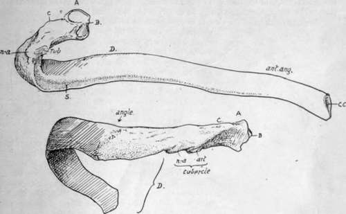
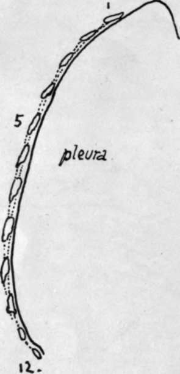
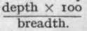
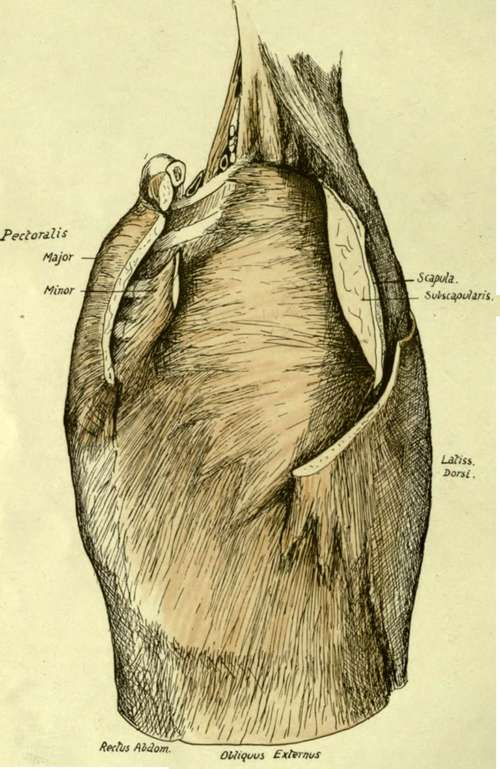

Costal Cartilages
Description
This section is from the book "The Anatomy Of The Human Skeleton", by J. Ernest Frazer. Also available from Amazon: The anatomy of the human skeleton.
Costal Cartilages
These are bars of hyaline cartilage rather more rounded than the ends of the ribs with which they are joined. Each is covered by a thick perichondrium continuous with the periosteum of the rib, and this is sometimes partly ossified in old age. * The cartilages that reach the sternum, with the exception of the first, articulate with that bone by diarthrodial joints. There are also synovial cavities at the junction of the eighth with the seventh, the ninth with the eighth and the tenth with the ninth, and usually there are additional interchondral articulations between the fifth, sixth and seventh cartilages. The cartilages run at first in the direction of the front ends of their ribs, so that, from the fourth down, they go at first downwards and then come up with an increasing curve, towards the sternum : the third and second are nearly horizontal, and the first is directed downwards as well as inwards.
* The perichondrium of the first rib becomes calcified much earlier.
Fig. 37.-A middle left rib. A. head ; B. ridge for interarticular ligament; C. crista superior; ZJ .[shaft. Upper figure shows the inner or pleural surface of shaft, and the subcostal groove S. Lower drawing shows the posterior part of the rib, between head and angle, which has intercostal structures attached to it and is completely covered by post-vertebral muscles over these ; the most superficial of these last reach the bone at the angle and make the secondary lines here. The head articulates with two vertebra and the tubercle rests on the transverse process of the lower one.
The second is most prominent anteriorly, and can be recognised at once in the living subject : the succeeding cartilages can be counted down from this.
Having become familiar with the names and positions of the various parts and with the general shape of the ribs, it is as well to consider them as a whole in the articulated skeleton before proceeding to study the details of the individual bones.
Looking at them in position, it at once becomes evident that the ribs are placed obliquely in the wall of the thorax, and there is a slight increase in their obhquity from above downwards, so that the intercostal spaces are somewhat wider in front than behind : the upper spaces are also rather wider than the lower ones. The bony thorax, the greater part of the walls of which is made by the ribs, is somewhat barrel-shaped, flattened from before backwards, and broader below than above. There is an evident convexity from above downwards in the line of its side wall, and this line turns in markedly at the top. Fig. 38 shows the effect of this form of the thorax on the direction in which corresponding surfaces of the ribs are turned : it is seen that the highest part of the curve is about the ninth rib, and that the hne, turning in below this, causes the pleural surface of the lower ribs to look upwards as well as inwards, while above the ninth they look down. This downward aspect of the pleural surface reaches its acme in the upper two ribs, owing to the increased curve in the hne, and on the first rib the pleural surface looks almost directly downwards. But it is clear, notwithstanding, that the lower surface of the first rib corresponds with the inner (and upper) surface of the last rib.
The antero-posterior compression of the thorax is a human character, a greater comparative depth being found in lower animals and in the foetus.* The adult measurement between the lower end of the sternum and the vertebral column is about 8 inches, and at the top of the sternum about 2-2 J inches, while the broadest part of the cavity, about the level of the ninth rib, is about 11 inches. Owing to the anterior deficiency that forms the costal arch or subcostal angle, the length of the posterior part of the cavity (12-13 inches) is about twice as long as its vertebral measurement in front.
These last measurements, with the obliquity of the ribs, account for the upper aperture, bounded by the first ribs and dorsal vertebra and top of manubrium, sloping downward, while the large lower aperture, bounded by the cartilages of the false ribs, the last ribs, and the twelfth dorsal vertebra, is in a plane sloping in the opposite direction-at least, in front of the tenth rib.
Fig. 38.-Scheme to show the effect of the shape of the thorax on the direction of the surfaces of the ribs.
* Like other recently acquired characters, this shallowness of the thorax is variable. It can be expressed by an index (at the nipple level). The normal average is about 71, but varies upwards to 80.
or even 90 or more. These high indices are frequently if not usually in tuberculous chests, and may represent an arrest in evolution of the human thorax : the evolution goes on during ontogeny, the index being considerably over 100 before birth, decreasing to about 80 at puberty, and then reaching the normal level in the next eight to ten years.
Fig. 39.-The antero-external relations of the ribs and costal cartilages. The front and back walls of the axilla have been in great part cut away, exposing the Serratus magnus as the inner wall. Observe the front parts of the two upper ribs not covered by the muscle, arid Scalenus posticus passing deep to it.
Looking into the cavity, the bodies of the vertebrae are seen to make a prominent median dorsal projection into it, so that a transverse section would give a reniform shape to the cavity. This vertebral ridge, together with the backward direction of the ribs in the region of their necks, leads to the existence on each side of it of a deep and broad pulmonary groove that is filled by the thick posterior border of the lungs.
Continue to: